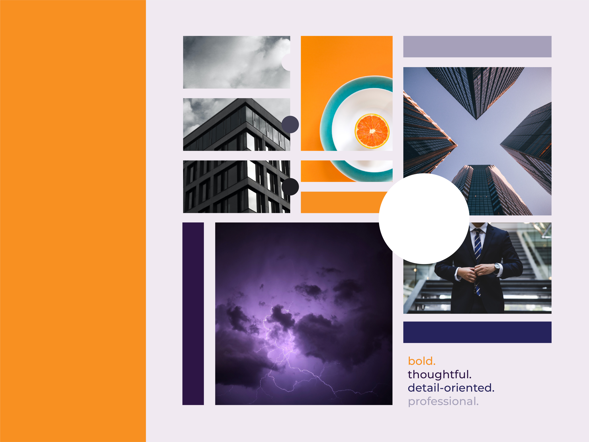
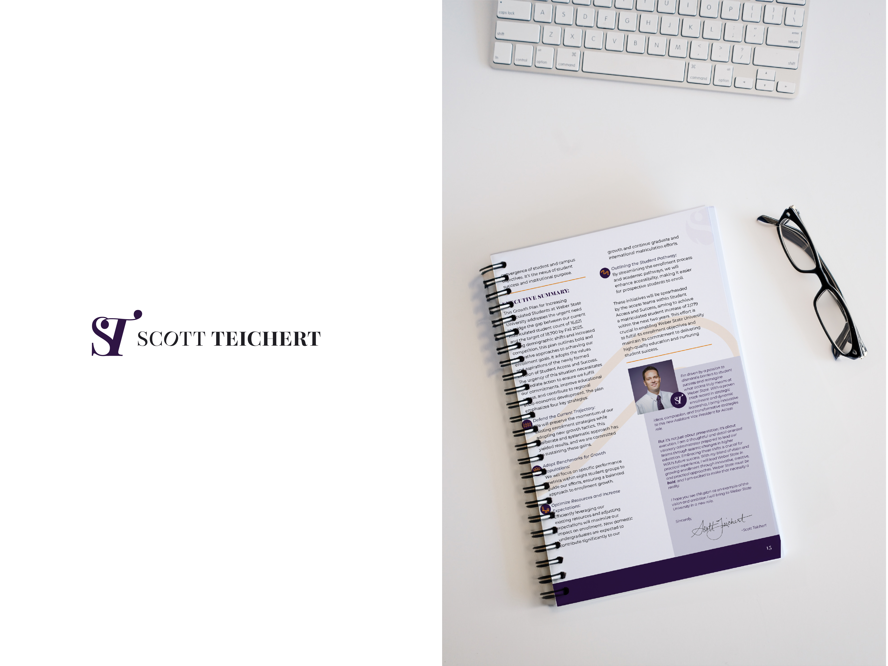
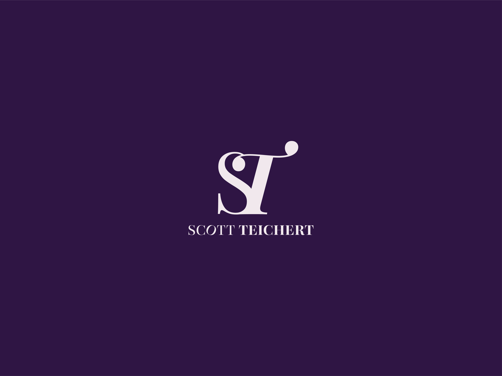
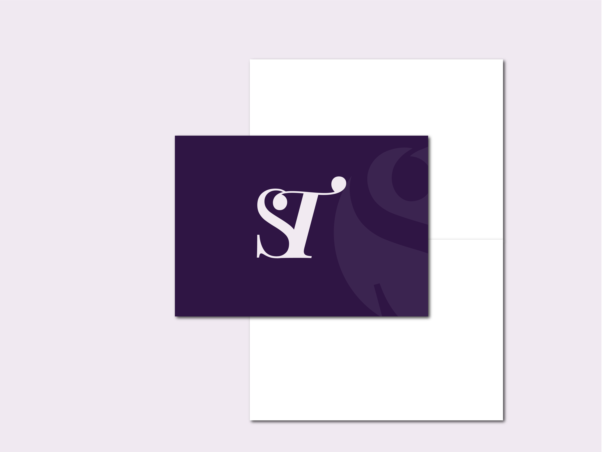

Personal Brand: Scott Teichert
Scott Teichert needed a personal brand developed that would position his candidacy as thoughtful, detail-oriented, bold and professional. Said branding would then be used in a slide deck presentation and printed collateral: greeting cards, one-sheet overview, and a spiral-bound plan.
Solution
Scott's branding needed to be bold, thoughtful, detail-oriented, and professional. A monogram with some flair was a perfect solution. It has professionalism and elegance. This mark is bold and refined, with subtleties built into the configuration that portray an attention to detail.
Result
A brand system was needed to develop not only a logo, but the look and feel of Scott's personal brand so that it could be applied to additional materials. This allowed him to look professional, prepared, and provided a cohesive look to everything he presented.